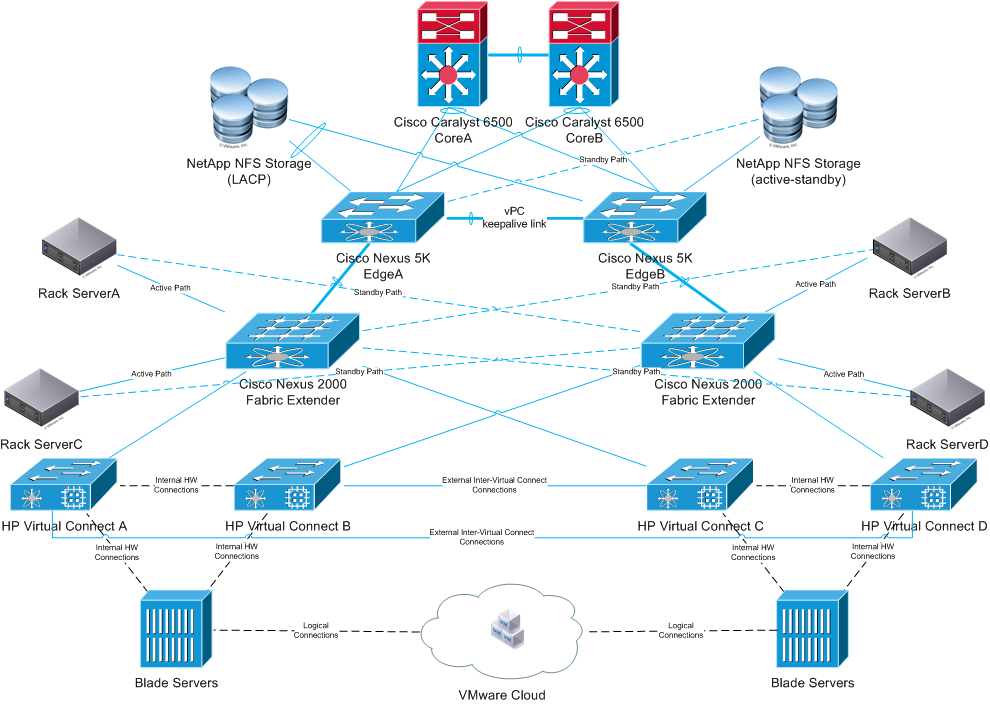
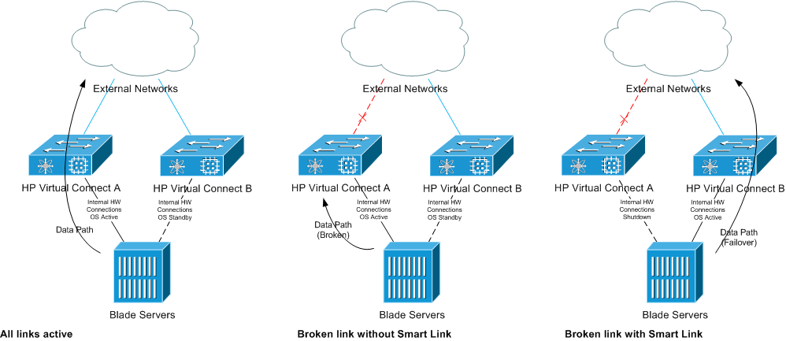
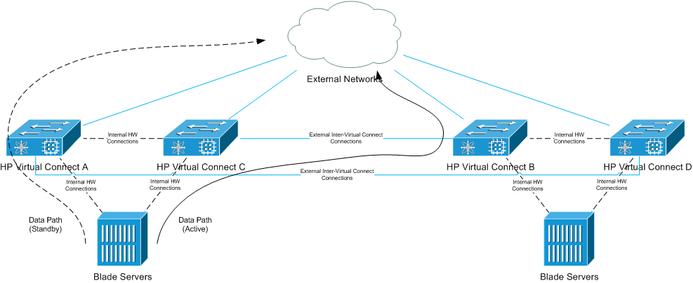
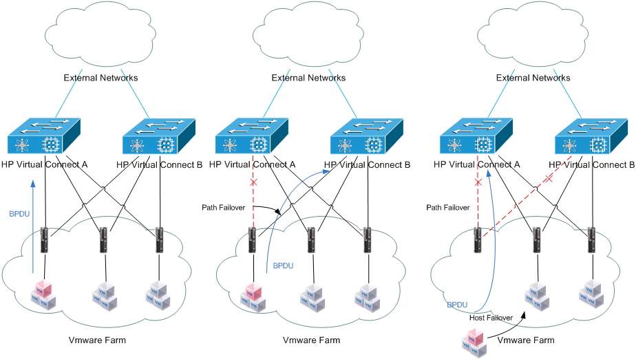
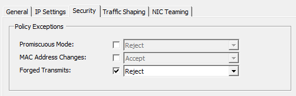
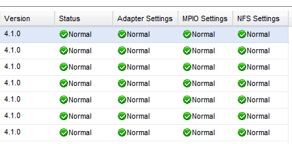

Data center topology with Cisco Nexus, HP Virtual Connect and VMware¶
Integrating devices made by different vendors is a delicate task, because each component can behave differently from what we expect. In this post, we discuss a data center core network built with Cisco, HP, NetApp and VMware equipment and software:

The diagram above does not show the best data center implementation: it shows an implementation chosen to discuss limits, risks and solutions.
Switching Within the Physical Core-Edge Network¶
The physical network is built with Cisco equipment:
- 2 Cisco Catalyst 6500 (no VSS) implement the Core level.
- 2 Cisco Nexus 5K implement the Distribution level.
- 2 (or more) Cisco Nexus 2000 (Fabric Extender) implement the Access level (HP Virtual Connects implement an additional Access level, discussed later).
Spanning Tree¶
STP is required to avoid loops in layer 2 networks. During a topology change, a VLAN can be frozen for up to 50 seconds. Rapid STP (802.1w) can shorten the STP topology change to about 30 seconds, not less. In this scenario, a lot of virtual machines run on an NFS datastore: each VM boots from a virtual disk, which is formally a file stored in the NFS datastore. Each virtual disk emulates a SCSI disk, so the virtual OS can send SCSI commands to it. A SCSI command needs a lossless medium: it cannot be delayed and it cannot be lost (the error recovery process takes too long). A topology change therefore stops all the SCSI commands of hundreds of VMs, and the operating systems crash or become unusable (Windows crashes with a blue screen, and Linux remounts all the filesystems read-only). There are fixes at the virtual machine level to avoid this behavior, discussed later.
We could eliminate STP almost completely by configuring VSS between the two Catalyst switches, but this discussion is not about VSS. We must therefore minimize the effect of an STP convergence.
Each Catalyst has a vPC link to both Nexus 5K. CoreA is the STP root for the NFS network, and CoreB is the root for the other VLANs. The N5K should not be the root because they present themselves with two different Bridge IDs: if the one with the lowest BID reboots, all the VLANs need to converge. Both Catalyst switches have two supervisors, so each root is more stable.
Both Catalyst switches act as gateways for the routed VLANs (management and production). A firewall (not shown in the diagram) routes the DMZ VLAN. The vMotion and NFS VLANs are isolated. A first-hop redundancy protocol (HSRP) can be configured between the two Catalyst switches: the primary gateway should follow the STP root.
Switching Path¶
Each server has a teaming (Windows) or bonding (Linux) mechanism to survive a single path failure. One path is active and the other remains standby. Depending on the driver, an active path can be configured as preferred. In this scenario we assume no preferred path, so we analyze the worst case. Each NetApp storage can be configured with an active-standby path mechanism or with a LACP port-channel.
We analyze the path between each pair of hosts:
- From ServerA to ServerC: the active path of both servers is attached to the same Fabric Extender (Nexus 2000), which is not a switching device. All the frames must be forwarded to the EdgeA switch and then back to the destination. The uplink path of the Fabric Extender can be a bottleneck.
- From ServerA to ServerB: the active paths of the servers are attached to different Fabric Extenders, which forward frames to the upper Edge switch. Analyzing the STP topology, the link between the edge switches should be in the Alternate state (rapid-pvst is used), so frames should flow to the root Catalyst switch and then back to the destination Nexus 5K. Because vPC peer links are always non-blocking (a vPC domain uses another mechanism to ensure a loop-free topology), frames flow through the vPC peer link using the shortest path. The vPC peer link can be a bottleneck too.
- Between NetApp storages: the traffic depends on the interface configuration (active-standby or active-active with LACP). As discussed in the previous point, the shortest path is used. Because storage traffic can impact the network heavily, NetApp should be attached directly to the Nexus 5K switches rather than to the Fabric Extenders. Otherwise, the N2K-N5K links are overused (the N2K are non-switching devices).
- From a server to a NetApp storage: an active-standby NetApp configuration follows the ServerA-ServerB example. A LACP NetApp configuration behaves differently: the storage presents its MAC address to both N5K switches. ServerA uses the active path and finds the destination storage within the nearest N5K switch. The NetApp LACP configuration lets the server reach it always through the shortest path. On the other hand, an active-standby configuration lets us move cables to other switches without a Takeover/Giveback action.
N2K devices are not switches: they are extensions (Fabric Extender) of the N5K/N7K switches, with important features and limitations:
- They are non-switching devices.
- They provide end-host connectivity only.
We cannot attach a switch to an N2K device: each N2K has an implicit BPDU guard. If a BPDU is received, the port is immediately placed in the error-disabled state, which keeps the link down.
The Additional Access Layer: HP Virtual Connects¶
HP Virtual Connects (VCs) are hybrid devices and can be compared to Cisco UCS 61xx devices: VCs virtualize server information as UCS does. This is not a discussion of VC vs. UCS 61xx. The comparison only points out what kind of devices VCs are.
Each HP blade is attached (VC downlinks) to both VCs located in the same chassis: each VC defines the WWNs and MAC addresses of the servers using profiles. Each profile can be moved or cloned to other servers. A bunch of trunk links from the upper Nexus layer brings all the VLANs to the VCs (VC uplinks). Each chassis must include a pair of VCs, which communicate through internal cross-connect 10GbE links. VCs on different chassis are connected with external fibers and form one VC domain. Each HP blade is connected to both VCs located in the same chassis, with internal hardware connections.
Within the same VC domain, traffic is forwarded internally. In other words, traffic between blade servers is switched:
- Within a VC, if both blades use the links to the same VC.
- Within the VC domain, using the loop connection, if the blades use links to different VCs.
A "Shared uplink set" is a group of VC uplinks. In "Auto" mode, the Shared uplink set negotiates a LACP port-channel. Each blade can use one or more Shared uplink sets to transmit and receive data. From the OS perspective, a single Shared uplink set is a network interface.
A LACP port-channel can be configured within the same VC only.
Smart Link¶
With the Smart Link feature, each Shared uplink set brings the blade network connections down if there are no more active VC uplinks in the same Shared uplink set. See the following example:

In the leftmost diagram, the blade servers are configured with a bonding/teaming device that holds two Shared uplink sets. Each Shared uplink set has only one VC uplink, which connects to the external networks. The black arrow indicates the active path of the bonding/teaming.
In the center diagram, a VC uplink is broken and a Shared uplink set becomes unusable. The blade servers still use the same path because it is in the up/up state: the data path is broken and the blade servers are unreachable.
In the rightmost diagram, the Smart Link feature is enabled and shuts down the unusable links. The blade servers recognize the broken link, and the active paths now use the other Shared uplink set (thanks to the bonding/teaming feature).
Now consider the following, more complex example:

In the configuration above, each Virtual Connect has one Shared uplink set with a single VC uplink inside it. The rightmost blade servers use a remote Shared uplink set as the active path. If the uplink of Virtual Connect B goes down, Smart Link notifies the directly connected blade servers, but it does not notify the other Virtual Connects about the broken link. The right blade server therefore keeps using the same link and becomes unreachable.
A Shared uplink set can contain interfaces from different Virtual Connects, but this is outside the scope of this post.
BPDU Guard¶
A VC behaves as an edge device on the network and does not transmit BPDUs: it does not participate in the spanning tree process. A BPDU guard is configured by default, and when a VC receives a BPDU from a blade server, it shuts down the internal link of that blade server. There is no BPDU filter feature.
This is a good thing: if a BPDU were forwarded to the N2K, the implicit BPDU guard on the N2K would shut down the entire VC uplink.
VMware¶
VMware software provides the end-host network access. Physically, VMware vSphere is software installed on servers, and inside it there is a complex system that emulates an entire data center.
A VMware virtual network (vNet) does not run STP and does not participate in any spanning tree process. Let's see the following example:

The red VM is transmitting BPDUs:
- The first BPDU is forwarded through the blade server where the VM is active. When the BPDU reaches Virtual Connect A, the link is shut down because of the BPDU guard.
- The VMware ESXi server links the red VM to the other active link (through Virtual Connect B).
- Another BPDU causes the shutdown of the second link. Now the first VMware ESXi server is unreachable.
- The VMware HA feature restarts all the VMs on another server.
- The red VM is active again and can transmit another BPDU.
- The process continues until all the servers are unreachable.
A VM can transmit a BPDU if:
- Two vmnics are configured and bridged together: in this case, if a BPDU (originated by the N5K) is received from one vmnic, it is forwarded through the other vmnic.
- An STP instance runs within the VM.
We can avoid the first case by configuring each vmnet to reject Forged Transmits:

We cannot avoid the second case with VMware ESXi 4.1. The solution is to install the Cisco Nexus 1000v or upgrade to VMware ESXi 5.1, which has a BPDU filter feature.
As discussed before, another potential issue is caused by STP convergence: because each virtual machine uses the SCSI protocol, packet loss or delay can be dangerous. To avoid crashes during an STP convergence, we must increase the SCSI and NFS timeouts.
On Windows (persistent):
On Linux (not persistent):
On Linux systems, VMware Tools also set the proper timeout (persistent across reboots).
We must also configure the ESXi servers with proper NFS settings. The easiest way is to install the NetApp Virtual Storage Console and check the NetApp tab from the vSphere Client:

Conclusions¶
Building a data center requires deep knowledge. This example showed that:
- The Cisco Fabric Extender (Nexus 2K) is a non-switching device with an implicit BPDU guard.
- A Cisco Nexus 5K vPC acts as a single switch for a port-channel, but originates two different Bridge IDs.
- HP Virtual Connects have a BPDU guard by default and a Smart Link feature to notify blade servers about link problems. Smart Link is not forwarded to other Virtual Connects (local significance only).
- A VMware virtual machine can originate BPDUs that are forwarded to other network devices.
- NFS datastores transport SCSI frames over an unreliable medium (STP can delay frames).
References¶
- Dear VMware, BPDU Filter != BPDU Guard
- ESXi 5.1 and BPDU Guard
- HP Virtual Connect: Common Myths, Misperceptions, and Objections
- HP Virtual Connect Smart Link
- Overview of HP Virtual Connect technologies
- Cisco Nexus 2000 Series Fabric Extender Software Configuration Guide, Release 4.1
- Cisco Nexus 2000: A Love/Hate Relationship
- HP Virtual Connect for the Cisco Network Administrator
- Cisco UCS intelligent QoS vs. HP Virtual Connect rate limiting
- Increasing the disk timeout values for a Linux 2.6 virtual machine (1009465)
- Inconsistent Windows virtual machine performance when disks are located on SAN datastores (1014)
- NetApp Virtual Storage Console for VMware vSphere